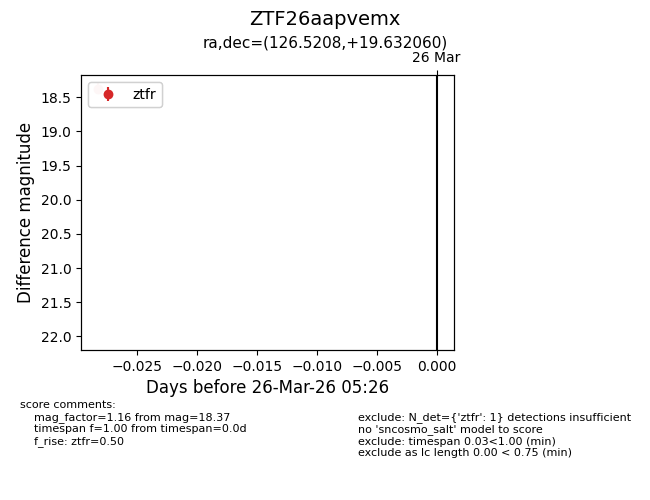
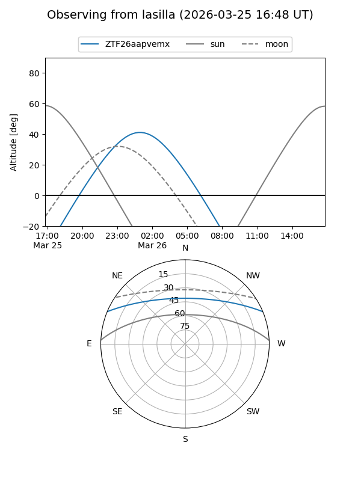
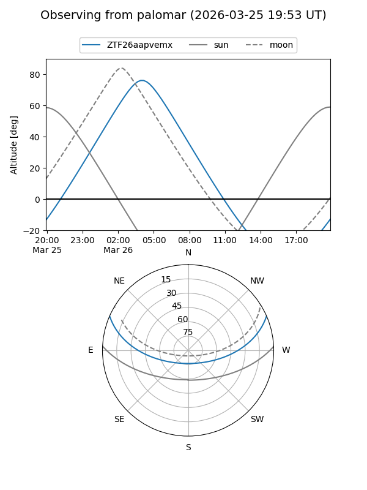

ZTF26aapvemx
Target ZTF26aapvemx at 2026-03-26 05:28
Aliases and brokers:
FINK: link
Lasair: link
ALeRCE: link
alt names
ZTF26aapvemx (ztf,fink_ztf)
Coordinates:
equatorial (ra, dec) = 126.5208,+19.63206
equatorial (HMS+DMS) = 08:26:05.00,+19:37:55.41
galactic (l, b) = (204.5798,+29.31538)
Flags:
Photometry:
last ztfr=18.37
1 ztfr detections
Lightcurve

Visibility


Additional plots